🐙 全球惊悚
Eldritch Horror · 设计：Nikki Valens · Fantasy Flight Games 出版 · 1–8 人 · 官方英文规则书全文翻译（16 页 · AI 辅助机翻）
本页收录《全球惊悚》（Eldritch Horror, 2013）的原版官方规则书全部 16 页（底本：Fantasy Flight Games 官方，EH01%20Rulebook.pdf），逐页随图排列，点击任意图片即可放大查看；每页下方默认折叠了该页的 AI 辅助中文机翻对照，需要时可展开。规则内容归 Fantasy Flight Games 及版权方所有，收录仅供个人学习查阅。
整理说明：机翻对照按本站术语口径对齐（牌库/手牌/回合/轮/板块/指示物等），PDF 图文混排页的语序可能与原书视觉顺序略有出入；规则细节请一律以页面上方原书页面为准。
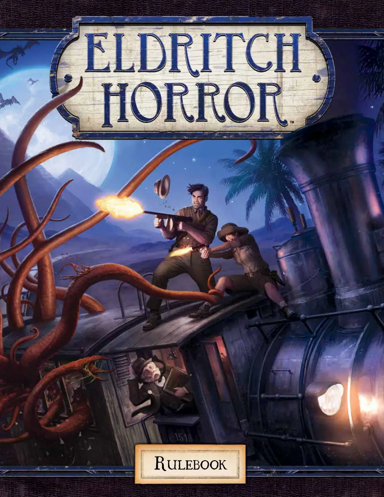
📝 第 1 页 AI 机翻对照（点击展开）
规则书
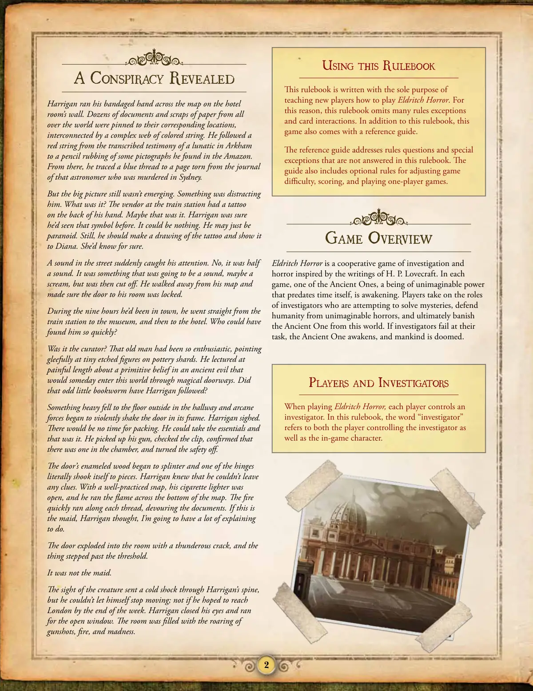
📝 第 2 页 AI 机翻对照（点击展开）
阴谋揭晓
哈里根用他缠着绷带的手拂过酒店房间墙上的地图。来自世界各地的数十份文件和纸片被钉在相应的位置上，由一张复杂的彩色细网相互连接。他顺着一条红线从阿卡姆疯子的转录证词追踪到他在亚马逊发现的一些象形文字的拓印。从那里，他沿着一条蓝线追溯到一位在悉尼被谋杀的天文学家的日记中的一页。
但大局仍未明朗。有什么东西分散了他的注意力。是什么？火车站的小贩手背上有一个纹身。也许就是那个。哈里根确定他以前见过那个符号。可能什么都不是。他可能只是多疑了。尽管如此，他应该画下那个纹身给黛安娜看。她会确定的。
街上突然传来的声音引起了他的注意。不，那只是一半的声音。那是即将成为某种声音的东西，也许是一声尖叫，但随后被切断了。他离开地图，确保房门已锁好。
在这座城市的九个小时里，他从火车站直接去了博物馆，然后去了酒店。谁能这么快就找到他？
是馆长吗？那个老人如此热情，得意地指着陶器碎片上微小的雕刻人物。他痛苦地长篇大论地讲述了一种原始信仰，相信一个古老的邪恶有朝一日会通过魔法之门进入这个世界。那个古怪的小书虫派人跟踪哈里根了吗？
有什么重物在走廊外的地板上倒下，神秘的力量开始猛烈摇晃门框。哈里根叹了口气。没有时间收拾行李了。他只能带上必需品。他拿起枪，检查弹夹，确认膛里有一颗子弹，然后关闭了保险。
门的搪木开始碎裂，一个合页 literally 摇身变成了碎片。哈里根知道他不能留下任何线索。他熟练地啪嗒一声打开打火机，让火焰扫过地图底部。火迅速沿着每条线蔓延，吞噬着文件。如果这是女仆，哈里根想，我将有很多解释要做。
门伴随着一声雷鸣般的巨响炸开，那个东西跨过了门槛。
不是女仆。
看到那个生物，哈里根的脊柱感到一阵冰冷的冲击，但他不能让自己停下来；如果他希望在本周末前到达伦敦的话。哈里根闭上眼睛，朝敞开的窗户跑去。房间里充满了枪声、火焰和疯狂的咆哮声。
游戏概述
克苏鲁的呼唤 (Eldritch Horror)
克苏鲁的呼唤是一款受H.P.洛夫克拉夫特(H. P. Lovecraft)作品启发的合作调查与恐怖游戏。在每局游戏中，一位远古者(Ancient Ones)——一个存在于时间之前的、拥有难以想象力量的存在——正在苏醒。玩家扮演调查者，试图解开谜团，保护人类免受难以想象的恐怖侵袭，并最终将远古者驱逐出这个世界。如果调查者未能完成任务，远古者就会苏醒，而人类将注定灭亡。
使用规则书
本规则书唯一目的是教新玩家如何玩克苏鲁的呼唤。因此，本规则省略了许多规则例外和卡牌互动。除了本规则书外，游戏还附带一本参考指南。
参考指南解决了本规则书中未解答的规则问题和特殊例外。该指南还包括用于调整游戏难度、计分和单人游戏的可选规则。
玩家与调查者
玩克苏鲁的呼唤时，每位玩家控制一名调查者。在本规则书中，"调查者"一词既指控制该调查者的玩家，也指游戏中的角色。
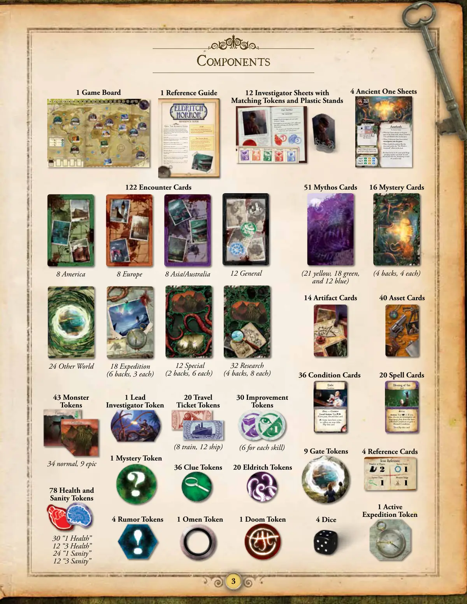
📝 第 3 页 AI 机翻对照（点击展开）
组件
8 美洲
51 神话卡牌
16 神秘卡牌
8 亚洲/澳洲
24 异世界
18 探险
（6种背面，每种3张）
12 通用
12 特殊
（2种背面，每种6张）
32 研究
（4种背面，每种8张）
学识
观察
影响
力量
意志
• 行动：你所在空间上的每位调查员恢复1点理智。
• 在战斗遭遇中解决测试时，你所在空间上的调查员额外投掷1个骰子。
"不，一点也不安静。当我吹响号角时，死人们会变得相当吵闹。"
音乐家
吉姆·卡尔弗（Jim Culver）
4位古神卡
—
—
{
邪教徒
设置
神话牌库
第一阶段：
第二阶段：
第三阶段：
在预兆轨道的绿色格上放置1个远古（Eldritch）指示物。
在解决{测试后，失去1点生命值并击败此怪物。
阿撒托斯（Azathoth）
恶魔苏丹
• 当预兆前进到预兆轨道的绿色格时，该格上的每个远古指示物使末日前进1点。
• 当3个神秘事件被解决时，调查员赢得游戏。
• 当阿撒托斯苏醒时，翻转此卡并解决背面的"世界被吞噬！"效果。
愚神（The Idiot God）坐落万物中心，散播疯狂与死亡。它的种子从天而降，威胁将世界一分为二。
1个游戏版图
改进
|
旧金山
获得增益咒语
阿卡姆
获得仪式咒语
布宜诺斯艾利斯
生成
线索指示物
伦敦
改进
]
伊斯坦布尔
改进
{
罗马
非洲之心
金字塔
喜马拉雅
通古斯
B 传说 A
B 预备 A
B 末日轨道 A
路径
火车
城市
未勘测
荒野
船只
海洋
格
B
O
m
e
n
T
r
a
c
k
A
服务
在执行获取资产行动时，你可以获得1个债务状态，立即为你的测试结果增加2点成功。
银行贷款
改进
[
上海
改进
}
悉尼
击败怪物
东京
南极洲
亚马逊
使用本参考指南
本文档旨在解答主规则书中未回答的所有规则疑问。与规则书不同，本参考指南不教导玩家如何玩游戏。玩家应首先完整阅读规则书，然后在游戏过程中根据需要使用本参考指南。
本指南有5个主要部分：
术语表 .............................................第2-12页
本文档的大部分是术语表。这按主题字母顺序列出了详细的规则说明。
常见问题 .............................................第12页
本部分回答了一些常见问题。
调查员能力 .............................................第13页
本部分列出了调查员能力的详细说明。
可选规则 .............................................第14页
这包括调整游戏难度和游戏结束时的计分选项。
索引 ........................................................第15页
参考指南
本节包含了一个全面的主题和页码列表，玩家在游戏过程中可能需要参考。
快速参考 ................................... 第16页
本指南的背面列出了游戏的各个阶段，采用易于参考的格式。
停止！
在阅读本文档之前，请先阅读规则书。阅读规则书后，玩家就可以开始进行他们的第一局游戏了。在游戏过程中出现问题时，玩家应参考本指南而非规则书。
黄金法则
本参考指南是规则信息的权威来源。如果本指南中的内容与规则书相矛盾，则以本指南为准。
对组件（如卡牌）的效果有时会与规则书或参考指南中的规则相矛盾。在这种情况下，组件的效果是正确的。
如果某个效果使用了"不能"一词，则该效果是绝对的。
参考指南
8个欧洲板块
12张调查员卡牌及对应的指示物和塑料支架
1本参考指南
122张遭遇卡牌
（4种背面，每种4张）
（21张黄色，18张绿色，12张蓝色）
14张神器卡牌
状况
交易 — 普通状况
本地行动：测试 ]。如果通过，弃掉此卡牌。
@：有些人来向你讨债。
翻转此卡牌。
债务
法术
仪式
行动：测试 [–1。如果通过，选择你所在空间上没有受祝福状况的一名调查员，使其获得受祝福状况。
然后翻转此卡牌。
伊西斯祝福
36张状况卡牌
20张法术卡牌
40张资产卡牌
图标参考
生成线索
玩家数量
怪物激增
生成传送门
4张参考卡牌
1个末日指示物
43个怪物指示物
1个预兆指示物
36个线索指示物
20个远古指示物
30个改进指示物
（每种技能6个）
20个旅行票证指示物
（8个火车，12个轮船）
4个骰子
78个健康和理智指示物
30个"1点健康"
12个"3点健康"
24个"1点理智"
12个"3点理智"
34个普通，9个史诗
9个传送门指示物
1个活跃远征指示物
4个谣言指示物
1个神秘指示物
1个首席调查员指示物
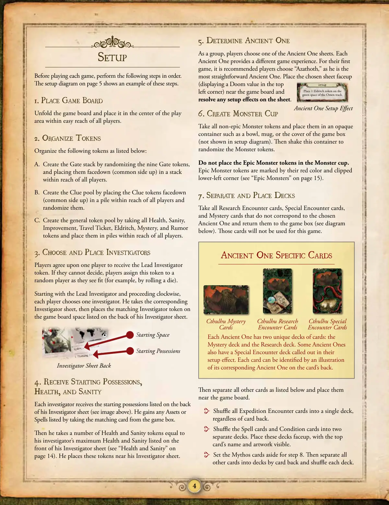
📝 第 4 页 AI 机翻对照（点击展开）
设置
在每局游戏开始前，按顺序执行以下步骤。
第5页的设置图展示了这些步骤的示例。
1. 放置游戏版图
展开游戏版图并将其放置在游戏区域的中央，方便所有玩家触及。
2. 整理指示物
按以下列表整理以下指示物：
A. 通过随机化九个门指示物来创建门牌堆，并将它们面朝下（公共面朝上）放置在一个所有玩家都能触及的牌堆中。
B. 通过将线索指示物面朝下（公共面朝上）放置在一个所有玩家都能触及的牌堆中并随机化它们，来创建线索池。
C. 通过取走所有健康、理智、改进、旅行票、古神、神秘和谣言指示物，并将它们放置在所有玩家都能触及的牌堆中，来创建通用指示物池。
3. 选择并放置调查员
玩家们商定一位玩家获得首席调查员指示物。如果他们无法决定，玩家们可以自行决定（例如通过掷骰子）将此指示物随机分配给一位玩家。
从首席调查员开始，顺时针进行，每位玩家选择一位调查员。他取走对应的调查员表，然后将匹配的调查员指示物放置在其调查员表背面列出的游戏版图区域上。
1 渔网资产
澳大利亚，悉尼
赛拉斯·马什
起始空间
起始持有物
调查员表背面
4. 获得起始持有物、健康和理智
每位调查员获得其调查员表背面列出的起始持有物（见上图）。他通过从游戏盒中取出对应的卡牌来获得列出的任何资产或法术。
然后，他取走数量等于其调查员表正面列出的最大健康和理智数值的健康和理智指示物（见第14页的"健康和理智"）。他将这些指示物放置在其调查员表附近。
5. 确定古神
作为一组，玩家们选择一张古神表。每张古神表提供不同的游戏体验。对于他们的第一局游戏，建议玩家选择"阿撒托斯"，因为他是最直接的古神。将选中的表面朝上放置（左上角显示厄运值）在游戏版图附近，并解决表上的任何设置效果。
6. 创建怪物杯
取走所有非史诗怪物指示物，并将它们放入一个不透明的容器中，如碗、马克杯或游戏盒的盖子（设置图中未显示）。然后摇晃这个容器以随机化怪物指示物。
不要将史诗怪物指示物放入怪物杯中。
史诗怪物指示物以其红色颜色和左下角被剪裁为标记（见第15页的"史诗怪物"）。
7. 分开并放置牌堆
取走所有研究遭遇卡、特殊遭遇卡，
与所选古神不对应的神秘牌，并将它们放回游戏盒（见下图）。这些牌将不会在本局游戏中使用。
然后将所有其他牌按如下分类，并放置在游戏版图附近。
^
^ 将所有远征遭遇牌洗成一副牌，无论牌背如何。
^
^ 将咒术牌和状态牌分别洗成两副牌。将这些牌堆正面朝上放置，使顶牌的名称和插画可见。
^
^ 将神话牌留待第8步使用。然后将所有其他牌按牌背分类成牌堆，并洗混每个牌堆。
设置
神话牌堆
在预兆轨道的绿色格上放置1个远古指示物。
古神设置效果
古神专属牌
克苏鲁神秘牌
克苏鲁遭遇牌
克苏鲁特殊遭遇牌
每个古神都有两副独特的牌：神秘牌库和研究牌库。一些古神在其设置效果中还指定了一副特殊遭遇牌。每张牌都可以通过牌背上的对应古神插画来识别。
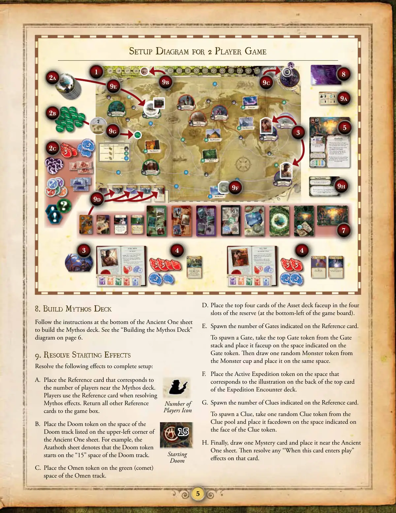
📝 第 5 页 AI 机翻对照（点击展开）
8. 构建神话牌库
按照远古之者卡底部的说明构建神话牌库。参见第6页的"构建神话牌库"图示。
9. 解决起始效果
解决以下效果以完成设置：
A. 将与玩家数量对应的参考卡放在神话牌库附近。玩家在解决神话效果时使用参考卡。将其他所有参考卡放回游戏盒。
B. 将厄运标记放在远古之者卡左上角列出的厄运轨道的格上。例如，阿撒托斯(Azathoth)卡表示厄运标记从厄运轨道的"15"格开始。
C. 将预兆标记放在预兆轨道的绿色(彗星)格上。
玩家数量
图标
起始
厄运
D. 将资产牌库顶部的四张牌正面朝上放在储备区的四个槽位中(游戏板左下角)。
E. 召唤参考卡上指定数量的传送门。要召唤传送门，从传送门堆中取出顶部的传送门标记，正面朝上放在传送门标记上指示的格上。然后从怪物杯中随机抽取一个怪物标记，放在同一格上。
F. 将活跃探险标记放在探险遭遇牌库顶牌背面图示对应的格上。
G. 召唤参考卡上指定数量的线索。要召唤线索，从线索池中随机抽取一个线索标记，面朝下放在线索标记正面指示的格上。
H. 最后，抽取一张神秘卡并将其放在远古之者卡附近。然后解决该卡上的任何"当此牌进入游戏时"效果。
双人游戏设置图示
知识
观察
影响力
力量
意志
• 行动：沿着船只路径移动1格，然后执行1个额外行动。
• 如果你位于海洋格上，你所在格的调查员在解决测试时额外投掷1个骰子。
"把你们的恐惧留在码头上，伙计们。我不会运送那批货物。风势起来了！全速前进！"
水手
赛拉斯·马什(Silas Marsh)
知识
观察
影响力
力量
意志
• 行动：花费任意数量的生命值或理智值，然后恢复等量的生命值或理智值。
• 当你提升一项技能时，你可以立即再次提升该技能。
"我一生都在准备对抗这股邪恶。我的注意力必须绝对集中。"
武术家
莉莉·陈(Lily Chen)
护身符
每轮一次，你在解决测试时可以重新投掷1个骰子。
幸运兔脚
物品
在战斗遭遇中获得+1{。
护身符
物品
在战斗遭遇中解决}测试时，你可以重新投掷1个骰子。
将你遭遇的怪物伤害减少1，最低为1。
渔网
ARKHAM
标记参考
玩家数量
怪物潮
生成传送门
物品 — 武器，魔法
在战斗遭遇中获得 +1 [ 和 +2 }。
精灵匕首
服务
当你获得这张牌时，立即选择一个区域。
所选区域上的每个怪物失去4点生命值。
然后弃掉这张牌。
机构隔离
物品 — 武器
在战斗遭遇中获得 +2 }。
.38左轮手枪
当调查员关闭一个与当前预兆相对应的传送门时，他可以花费1个线索在此牌上放置1个远古标记。
在神话阶段结束时，如果此牌上的远古标记数量等于 ~ 的一半，解决这个谜题。
毁灭预兆
灾祸之月出现在夜空中，对所有人可见，预示着即将到来的毁灭。
条件
交易 — 普通
本地行动：测试 ]。
如果你通过，弃掉这张牌。
@：有些人来收债了。
翻转这张牌。
债务
法术
仪式
行动：测试 [–1。如果你通过，选择你所在区域上没有祝福条件的调查员，使其获得一个祝福条件。
然后翻转这张牌。
伊西斯祝福
邪教徒
设置
神话牌库
第一阶段：
第二阶段：
第三阶段：
在预兆轨道的绿色区域上放置1个远古标记。
在通过 { 测试后，失去1点生命值并击败这个怪物。
阿撒托斯
恶魔苏丹
• 当预兆前进到预兆轨道的绿色区域时，该区域上的每个远古标记使末日前进1。
• 当3个谜题被解决时，调查员获胜。
• 当阿撒托斯苏醒时，翻转此表并解决背面的"世界被吞噬！"效果。
傻瓜神坐在万物的中心，散播疯狂和死亡。它的种子从天而降，威胁着将世界一分为二。
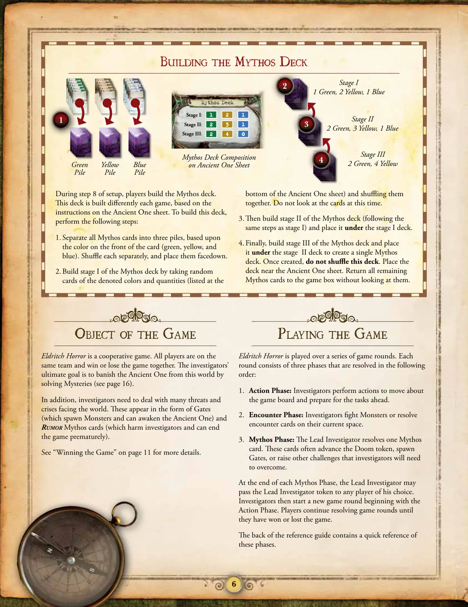
📝 第 6 页 AI 机翻对照（点击展开）
游戏目标
《克苏鲁的呼唤》是一款合作游戏。所有玩家都在同一队，一起赢或一起输。调查员的最终目标是解决谜题（见第16页），将远古者从这个世界放逐。
此外，调查员需要处理世界上面临的许多威胁和危机。这些以传送门（会生成怪物并可能唤醒远古者）和谣言神话卡（会伤害调查员并可能提前结束游戏）的形式出现。
更多详情请参见第11页的"游戏胜利"。
游戏进行
《克苏鲁的呼唤》通过一系列游戏回合进行。每个回合包含三个阶段，按以下顺序解决：
1. 行动阶段：调查员执行行动，在游戏版图上移动并为即将到来的任务做准备。
2. 遭遇阶段：调查员与怪物战斗或解决他们当前所在空间的遭遇卡。
3. 神话阶段：主调查员解析一张神话卡。这些卡通常会推进厄运标记，生成传送门，或提出其他调查员需要克服的挑战。
在每个神话阶段结束时，主调查员可以将主调查员指示物交给任意他选择的玩家。然后调查员开始新的游戏回合，从行动阶段开始。玩家继续解决游戏回合，直到他们赢得或输掉游戏。
参考指南的背面包含这些阶段的快速参考。
构建神话牌库
在设置的第8步中，玩家构建神话牌库。
这个牌库每局游戏构建方式不同，基于远古者卡上的说明。要构建此牌库，请执行以下步骤：
1. 根据卡牌正面的颜色（绿色、黄色和蓝色），将所有神话卡分成三堆。分别洗牌，然后面朝下放置。
2. 通过获取指定颜色和数量的随机卡（列在远古者卡底部）并一起洗牌，来构建神话牌库的第一阶段。此时不要查看卡牌。
- 然后构建神话牌库的第二阶段（遵循与第一阶段相同的步骤），并将其放置在第一阶段牌库下方。
4. 最后，构建神话牌库的第三阶段，并将其放置在第二阶段牌库下方，形成一个单一的神话牌库。创建后，不要洗此牌库。将牌库放在远古者卡附近。不要查看，将所有剩余的神话卡放回游戏盒中。
神话牌库
第一阶段：
第二阶段：
第三阶段：
g
p
神话牌库组成
在远古者卡上
第一阶段
1张绿色，2张黄色，1张蓝色
第二阶段
2张绿色，3张黄色，1张蓝色
第三阶段
2张绿色，4张黄色
绿色堆
黄色堆
蓝色堆
你在新闻中一次又一次地听到它。每天世界又进一步
迈向彻底的毁灭。你问自己，你会牺牲多少来阻止那场灾难？即使你只能给人类多争取一天的生存时间，你能诚实地说这个代价太高了吗？
绝望时刻
事件
末日进度前进2，除非首席调查员获得黑暗契约状态。
报纸最后一页的一篇文章引起了你的注意。对偏远前哨站的神秘袭击没有留下任何幸存者。你已经读到该地区发生了两起类似的袭击。你可以看到地球被遗忘的角落变得越来越危险。
古代守护者
事件
在活跃探险空间生成2个怪物。
闪电划过天空。你有一种不祥的预感，你所做的一切好事即将被逆转。
黑暗力量
事件
每个怪物恢复所有生命值。
然后，每个调查员立即按照他选择的顺序，在他所在的空间遭遇每个怪物。
你正在一点点分崩离析。成功进行简单的人际交往变得越来越困难。你的伤口不停流血，你的手不停颤抖。
雪上加霜
事件
每个调查员根据他拥有的伤害状态失去1点生命值，根据他拥有的疯狂状态失去1点理智值，并根据他拥有的交易状态弃置1条线索。
报纸最后一页的一篇文章引起了你的注意。对偏远前哨站的神秘袭击没有留下任何幸存者。你已经读到该地区发生了两起类似的袭击。你可以看到地球被遗忘的角落变得越来越危险。
古代守护者
事件
在活跃探险空间生成2个怪物。
士兵们拒绝解释为什么你必须通过这个检查站，而仅仅询问就让你在他们的眼中变得更加可疑。
巡逻边境
持续
当这张牌进入游戏时，首席调查员选择1名调查员延迟。
@：每个在城市空间的调查员进行|检定。如果失败，他将被延迟并获得一个拘留状态。
然后弃置这张牌。
根据警方报告，几名人员在半夜进入了仓库。他们进行某种仪式，最终导致他们死亡。你知道而警方不知道的是，之后，某种非人类的东西离开了那个仓库。
呼唤古神
事件
在每个包含邪教徒怪物的空间生成1个怪物。
西装男子将合同推过桌子。"我们已经和警察以及海关代理谈过了，所有必要的付款都已付清。如果你只是签下这个，表明你理解你的义务，你就可以上路了。"他的助手将一支笔放在你手中。
合法银行业务
事件
首席调查员获得一个债务状态。
如果首席调查员已经有一个债务状态，他会解决那张牌上的清算效果，将所有骰子点数视为1点。
根据警方报告，几名人员在半夜进入了仓库。他们进行某种仪式，最终导致他们的死亡。而你知道警方不知道的是，之后，有某种非人的东西离开了那个仓库。
呼唤远古之物
事件
在每个包含邪教徒怪物的格上生成1个怪物。
你无法相信这个胡言乱语的疯子曾经是你今天早上交谈过的那个面带微笑、神志清醒的律师。"坍塌了，"他颤抖的手指向着空无一物的空气，"世界碰撞了，门坍塌了！"他突然从地板上爬起来，看向他牢房的小窗户。"但他们也会拉扯。他们会撕扯，一个新的门将在别处开启。"
维度不稳定
事件
弃置与当前预兆相对应的每个传送门，并根据每个弃置的传送门推进末日1点。
你在首都的联系人不愿谈论那些被称为"守望者"的人。他说他们为多个不同的政府工作，但听从某个其他权威的命令。
失落的知识
持续 — 谣言
当这张牌进入游戏时，在21号格上生成嘀嗒人史诗怪物。当它被击败时，解决这个谣言。
当这张牌上没有远古神物指示物时，弃置游戏版图上的所有线索，然后每个调查员弃置所有线索。
@：从这张牌上弃置1个远古神物指示物。
天气变得更糟了。雪和冰覆盖了那些历史上从未见过这种天气的城市
风行者
持续 — 谣言
当这张牌进入游戏时，在4号格上生成风行者史诗怪物。当它被击败时，解决这个谣言。
当这张牌上没有远古神物指示物时，每个调查员被延迟并失去6点生命值，然后解决这个谣言。
@：从这张牌上弃置1个远古神物指示物。
某种黑暗魔法控制了你。朋友们开始忽视你，仿佛你根本不在房间里。情况越来越糟，你担心很快你对地球上其他每个人都会变得隐形！
社会中的隐形人
持续 — 谣言
作为一次遭遇，在16号格上的调查员可以尝试研究过去的类似事件(|)。如果他通过，他会了解到一个关于儿童失踪的俄罗斯民间故事；他可以花费等于一半~的线索来解决这个谣言。
@：搜索资产牌库、弃牌堆和储备区，找出所有价值大于或等于这张牌上远古神物指示物数量的资产，并将它们放回游戏盒。然后从这张牌上弃置1个远古神物指示物。如果这张牌上没有远古神物指示物，解决这个谣言。
16号格
你从未见过北极光如此强烈地闪烁。即使在北极以南
圆圈，空气中充满了无法驱散的外星能量。
神秘之光
持续 — 谣言
传送门无法关闭。
作为一次遭遇，在13号区域的调查员可以驾驶飞机飞越北极冰层，以搜寻这些异常强烈的北极光（|）的来源。如果他通过，他会看到一个未被占据的米-高（Mi-Go）前哨站，并尝试关闭他们奇特的装置；他可以花费等于一半~的线索来解决这个谣言。
13号区域
一打看起来不友善的陌生人带着大量天文学参考书定居在巴拿马。这个地方和这个时代有某种独特之处，使他们能够撕裂现实的织物。
星辰对齐
持续 — 谣言
作为一次遭遇，在7号区域的调查员可以尝试根据他对星辰的观察（|）找到这些陌生人。如果他通过，他说服警方将这些陌生人驱逐出境；他可以花费等于一半~的线索来解决这个谣言。
@：将预兆前进1格。
7号区域
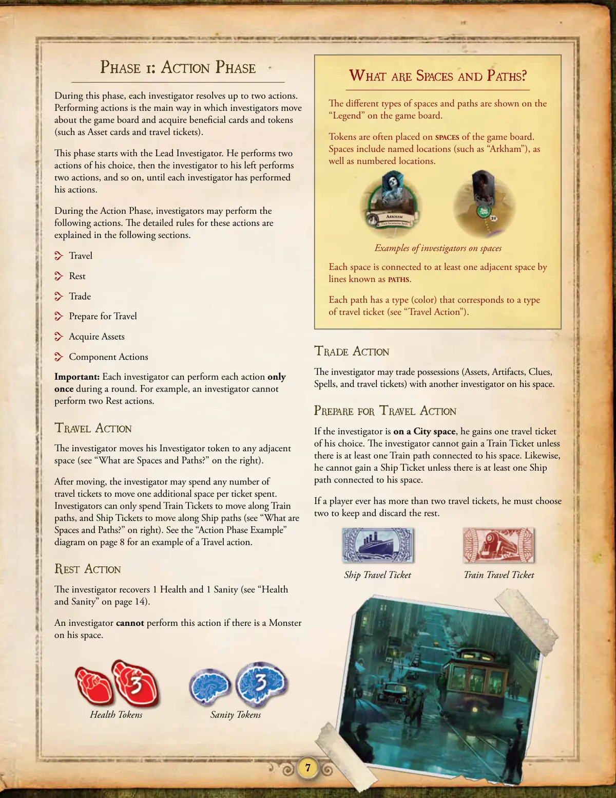
📝 第 7 页 AI 机翻对照（点击展开）
阶段1：行动阶段
在此阶段，每位调查者最多可以执行两个行动。
执行行动是调查者在游戏版图上移动并获得有益卡牌和指示物（如资产卡牌和旅行票）的主要方式。
此阶段由首席调查者开始。他执行两个他选择的行动，然后他左边的调查者执行两个行动，依此类推，直到每位调查者都执行了他的行动。
在行动阶段，调查者可以执行以下行动。这些行动的详细规则在以下章节中解释。
^
^ 旅行
^
^ 休息
^
^ 交易
^
^ 准备旅行
^
^ 获取资产
^
^ 组件行动
重要：每位调查者在每轮中只能执行每个行动一次。例如，调查者不能执行两次休息行动。
旅行行动
调查者将其调查者指示物移动到任意相邻的格（参见右侧的"什么是格和路径？"）。
移动后，调查者可以花费任意数量的旅行票，每花费一张票可以额外移动一格。
调查者只能使用火车票沿着火车路径移动，使用轮船票沿着轮船路径移动（参见右侧的"什么是格和路径？"）。第8页的"行动阶段示例"图展示了旅行行动的示例。
休息行动
调查者恢复1点生命值和1点理智值（参见第14页的"生命值和理智值"）。
如果调查者的格上有怪物，他不能执行此行动。
生命值指示物
理智值指示物
交易行动
调查者可以与他所在格上的另一位调查者交易物品（资产、神器、线索、法术和旅行票）。
准备旅行行动
如果调查者在城市格上，他获得一张他选择的旅行票。除非至少有一条火车路径连接到他的格，否则调查者不能获得火车票。同样，除非至少有一条轮船路径连接到他的格，否则他不能获得轮船票。
如果玩家拥有超过两张旅行票，他必须选择两张保留，其余的则弃掉。
轮船旅行票
火车旅行票
什么是格和路径？
不同类型的格和路径显示在游戏版图上的"图例"中。
指示物通常放置在游戏版图的格上。
格包括命名地点（如"阿卡姆"）和编号地点。
阿卡姆
(Gain Incantation Spells)
格上的调查者示例
每个格至少通过一条称为路径的线与至少一个相邻格连接。
每条路径都有一种类型（颜色），对应一种类型的旅行票（参见"旅行行动"）。
这使他们能够撕裂现实的织物。
星辰对齐
持续进行 — 谣言
作为一个遭遇，位于7号区域的调查员可以尝试根据他对星辰的观察(|)来寻找这些陌生人。如果他成功，他说服警方将这些陌生人带走；他可以花费等于一半~的线索来解决这个谣言。
@：将预兆前进1。
7号区域
谣言 克苏鲁神话卡
谣言指示物
^
^ 被击败的调查员指示物允许调查员解决被击败调查员表格背面列出的遭遇（参见第14页的"被击败的调查员"）。
一个被击败的调查员指示物
"我很好，亲爱的。顺便，请自便。"洛拉点头示意散落在酒店房间里的装备。获得她所有的物品。尽管她很有说服力，但你知道她很痛苦。你试图说服她去医院(|)。如果你成功，她松了一口气，告诉你她遇到的所有恐怖；将厄运后退1。如果你失败，洛拉离开城市的第二天，她就因伤势过世。无论你是否成功，都弃置她的调查员指示物。
洛拉物品的线索带你进入一座废弃的剧院。获得她所有的物品。她站在舞台上绞着她血淋淋的手，念着："这双手永远不会干净吗？"你试图指导她的表演，希望能更好地揭示她的角色(|)。如果你成功，她告诉你关于破烂之王的事，并指向她杀死的一只山羊；将厄运后退1。如果你失败，洛拉的对话退化成胡言乱语。无论你是否成功，都弃置她的调查员指示物。
在世界各地，洛拉为满座的观众表演戏剧角色。然而，在被有争议的戏剧《黄衣之王》选中后，洛拉需要"花些时间"从她的" exhaustion"中恢复。既然她已经从精神病院出院，她准备好迎接她的重大回归。但这一次，她将在对抗威胁这个世界的恐怖中扮演不同的角色。她首先前往东京，追踪她之前戏剧尝试中唯一幸存的演员。
洛拉·海耶斯
1.18 德林杰 资产
提升你选择的1项技能
东京，JP
调查员
表格背面
改
进
{
罗
马遭遇通常会
提升调查员的意志({)
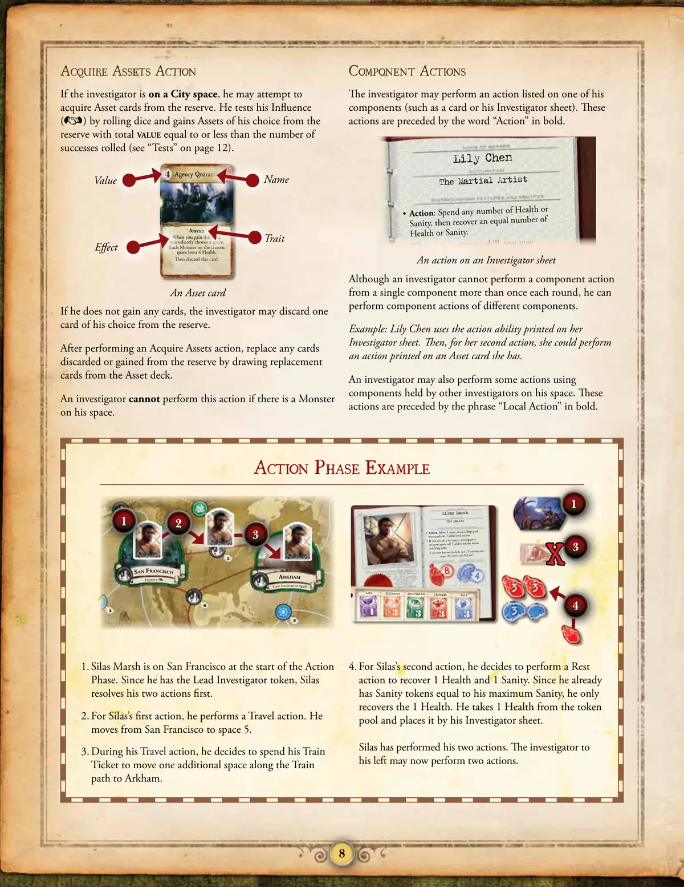
📝 第 8 页 AI 机翻对照（点击展开）
获取资产行动
如果调查员位于城市格，他可以尝试从储备区获取资产卡牌。他通过掷骰子测试他的影响力（])，并获得从储备区中选择的、总价值小于或等于成功次数的资产（参见第12页的"测试"）。
一张资产卡牌
服务
当你获得此卡牌时，立即选择一个格。
所选格上的每个怪物失去4点生命值。
然后弃掉此卡牌。
机构隔离
价值
效果
名称
特性
如果他未获得任何卡牌，调查员可以从储备区弃掉一张他选择的卡牌。
执行获取资产行动后，从资产牌库中抽取替换卡牌，替换从储备区弃掉或获得的任何卡牌。
如果调查员所在格上有怪物，他无法执行此行动。
组件行动
调查员可以执行他某个组件（如卡牌或他的调查员表）上列出的行动。这些行动前面有粗体的"行动"一词。
调查员表上的一个行动
• 行动：花费任意数量的生命值或理智值，然后恢复等量的生命值或理智值。
• 当你提升一项技能时，你可以
武术家
莉莉·陈（Lily Chen）
尽管调查员每轮不能从单个组件执行组件行动超过一次，但他可以执行不同组件的组件行动。
示例：莉莉·陈使用她调查员表上印制的行动能力。然后，作为她的第二个行动，她可以执行她拥有的一张资产卡牌上印制的行动。
调查员还可以使用他所在格上其他调查员持有的组件执行一些行动。这些行动前面有粗体的"本地行动"一词。
行动阶段示例
1. 行动阶段开始时，塞拉斯·马什（Silas Marsh）在旧金山（San Francisco）。由于他拥有首席调查员指示物，塞拉斯首先解决他的两个行动。
- 对于塞拉斯的第一个行动，他执行了一次移动行动。他从旧金山移动到5号格。
3. 在他的移动行动中，他决定使用他的火车票，沿着火车路径额外移动一格到阿卡姆（Arkham）。
- 对于塞拉斯的第二个行动，他决定执行一次休息行动，恢复1点生命值和1点理智值。由于他已经拥有等于他最大理智值的理智指示物，他只恢复了1点生命值。他从指示物池中取出1点生命值，并将其放在他的调查员表旁边。
塞拉斯已经执行了他的两个行动。他左边的调查员现在可以执行两个行动。
小恶魔
提升
|
旧金山
获得法术
阿卡姆
学识
观察
影响力
力量
意志
• 行动：沿着船只路径移动1格，然后执行1个额外行动。
• 如果你位于海洋格，当你所在格上的调查员进行测试时，他们额外掷1个骰子。
"把恐惧留在码头上，伙计们。我不会运送那批货物。风起了！全帆前进！"
水手
赛拉斯·马什
X
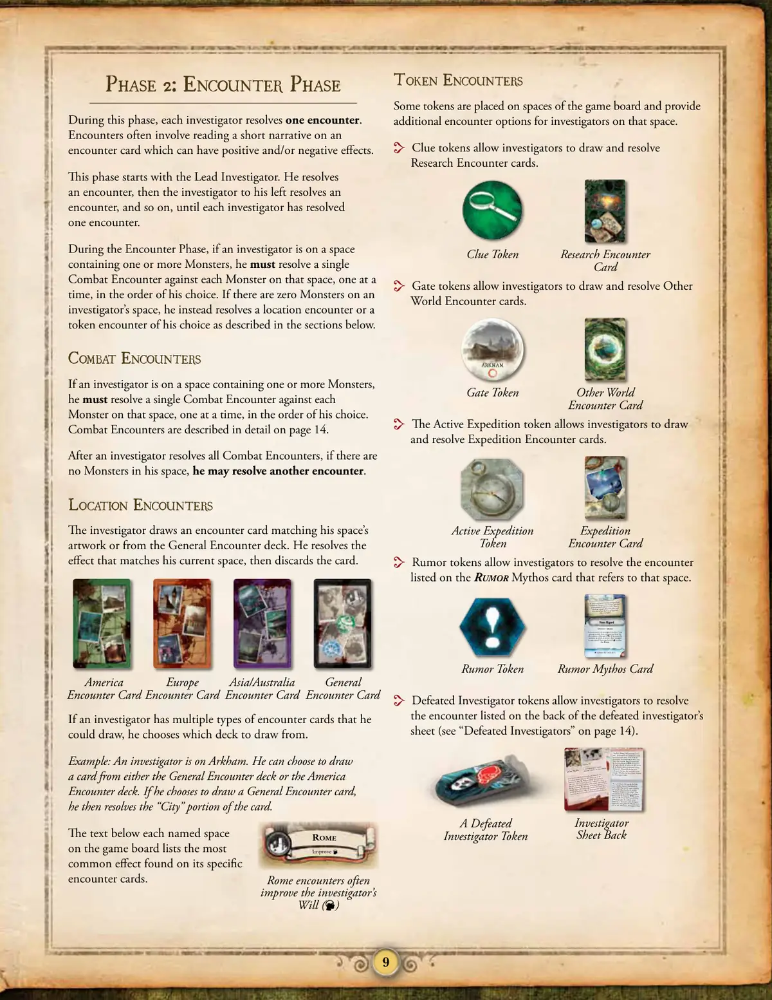
📝 第 9 页 AI 机翻对照（点击展开）
第二阶段：遭遇阶段
在此阶段，每位调查员解决一次遭遇。
遭遇通常涉及阅读遭遇卡上的简短叙述，这些遭遇卡可能具有正面和/或负面效果。
此阶段由首席调查员开始。他解决一次遭遇，然后他左边的调查员解决一次遭遇，依此类推，直到每位调查员都解决了一次遭遇。
在遭遇阶段，如果调查员位于包含一个或多个怪物的格上，他必须按照自己选择的顺序，一次解决一个与该格上每个怪物的单独战斗遭遇。如果调查员的格上没有怪物，他则按照下文各节所述，选择解决一个地点遭遇或一个指示物遭遇。
战斗遭遇
如果调查员位于包含一个或多个怪物的格上，他必须按照自己选择的顺序，一次解决一个与该格上每个怪物的单独战斗遭遇。
战斗遭遇在第14页有详细描述。
调查员解决所有战斗遭遇后，如果他的格中没有怪物，他可以解决另一次遭遇。
地点遭遇
调查员抽取一张与他所在格的艺术作品相匹配的遭遇卡，或从通用遭遇牌库中抽取一张。他解决与当前格相匹配的效果，然后弃掉这张卡。
美国
遭遇卡
欧洲
遭遇卡
亚洲/澳大利亚
遭遇卡
通用
遭遇卡
如果调查员有多个类型的遭遇牌可以抽取，他选择从哪个牌库抽取。
示例：调查员在阿卡姆。他可以选择从通用遭遇牌库或美国遭遇牌库中抽取一张卡。如果他选择抽取一张通用遭遇卡，然后他解决卡上的"城市"部分。
游戏板上每个命名格下方的文本列出了其特定遭遇卡上最常见的效应。
指示物遭遇
一些指示物被放置在游戏板的格上，为该格上的调查员提供额外的遭遇选项。
^
^ 线索指示物允许调查员抽取并解决研究遭遇卡。
研究遭遇卡
线索指示物
^
^ 门扉指示物允许调查员抽取并解决异界遭遇卡。
异界遭遇卡
门扉指示物
阿卡姆 (ARKHAM)
^
^ 活跃远征指示物允许调查员抽取并解决远征遭遇卡。
远征遭遇卡
活跃远征指示物
^
^ 谣言指示物允许调查员解决与该格相关的谣言神话卡上列出的遭遇。
一打看起来不友善的陌生人带着大量天文参考书定居在巴拿马。这个地方有些特别，
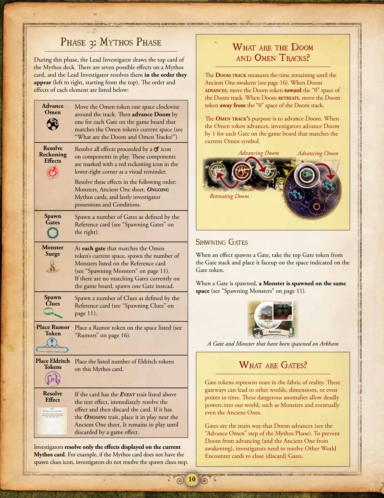
📝 第 10 页 AI 机翻对照（点击展开）
第3阶段：神话阶段
在此阶段，首席调查员从神话牌库顶抽一张牌。神话牌上有七种可能的效果，首席调查员按它们出现的顺序（从左到右，从顶部开始）解决这些效果。每个元素的顺序和效果如下：
前进
预兆
将预兆指示物沿轨道顺时针移动一格。然后，根据游戏板上与预兆指示物当前空间匹配的传送门数量，末日值前进一（参见"末日和预兆轨道是什么？"）。
解决
报应
效果
解决游戏中所有组件上带有@图标的效果。这些组件在右下角有一个红色报应图标作为视觉提醒。
按以下顺序解决这些效果：怪物、古神面板、持续神话牌，最后是调查员物品和状态。
生成
传送门
根据参考卡上定义的数量生成传送门（参见右侧的"生成传送门"）。
怪物
涌现
在每个与预兆指示物当前空间匹配的传送门处，根据参考卡上列出的数量生成怪物（参见第11页的"生成怪物"）。
如果当前游戏板上没有匹配的传送门，则生成一个传送门。
生成
线索
根据参考卡上定义的数量生成线索（参见第11页的"生成线索"）。
放置
谣言
指示物
将谣言指示物放置在列出的空间上（参见第16页的"谣言"）。
放置
克苏鲁
指示物
将列出的数量的克苏鲁指示物放置在此神话牌上。
解决
效果
事件
每个怪物恢复所有生命值。
然后每个调查员立即按其选择顺序遭遇其所在空间上的每个怪物。
如果卡牌在文本效果上方列有"事件"特性，立即解决该效果然后弃掉此牌。如果它有"持续"特性，将其放置在古神面板附近。它一直留在游戏中直到被游戏效果弃掉。
调查员只解决当前神话牌上显示的效果。例如，如果神话牌没有生成线索图标，调查员不解决生成线索步骤。
生成传送门
当效果生成传送门时，从传送门堆顶取一个传送门指示物，将其正面朝上放置在传送门指示物上指示的空间上。
当传送门被生成时，一个怪物在同一空间生成（参见第11页的"生成怪物"）。
在阿卡姆
迷
咒
法
术
中
生
成
的
传
送
门
和
怪
物
阿卡姆
什么是传送门？
传送门指示物代表现实结构中的裂痕。这些门户可以通往其他世界、维度，甚至是时间点。这些危险的异常现象允许致命的力量进入我们的世界，例如怪物，最终甚至是古神。
传送门是末日值前进的主要方式（参见
"推进预兆"步骤（神话阶段的"推进预兆"步骤）。为阻止厄运推进（以及古神苏醒），调查员需要解决异界遭遇卡牌来关闭（弃置）传送门。
什么是厄运和预兆轨道？
厄运轨道衡量的是古神苏醒前剩余的时间（见第16页）。当厄运推进时，将厄运指示物向厄运轨道的"0"格移动。当厄运后退时，将厄运指示物远离厄运轨道的"0"格移动。
预兆轨道的目的是推进厄运。当预兆指示物推进时，调查员根据游戏板上与当前预兆符号匹配的每个传送门推进厄运1点。
B
O
m
e
n
T
推进预兆
后退厄运
推进厄运
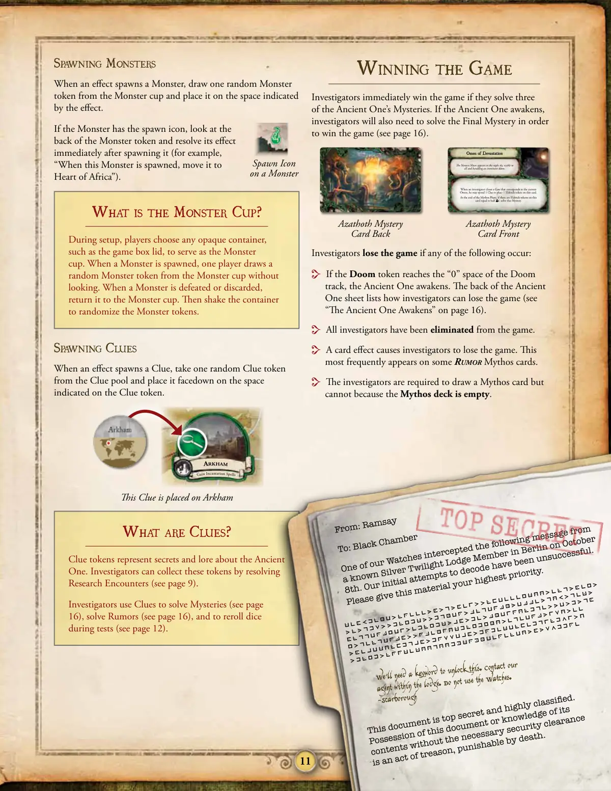
📝 第 11 页 AI 机翻对照（点击展开）
生成怪物
当一个效果生成怪物时，从怪物杯中随机抽取一个怪物指示物，并将其放置在该效果指示的区域上。
如果怪物上有生成图标，请查看怪物指示物的背面，并在生成后立即解决其效果（例如，"当此怪物被生成时，将其移动到非洲之心"）。
什么是怪物杯？
在设置阶段，玩家选择任何不透明的容器，例如游戏盒盖，作为怪物杯。当怪物被生成时，一名玩家不看地从怪物杯中随机抽取一个怪物指示物。当怪物被击败或弃置时，将其返回到怪物杯中。然后摇晃容器以随机化怪物指示物。
生成线索
当一个效果生成线索时，从线索池中随机抽取一个线索指示物，并将其面朝下放置在线索指示物上指示的区域。
此线索放置在阿卡姆
收
益
咒
语
阿卡姆
什么是线索？
线索指示物代表关于古神的秘密和传说。调查者可以通过解决研究遭遇（见第9页）来收集这些指示物。
调查者使用线索来解决谜团（见第16页）、解决谣言（见第16页），以及在测试过程中重新掷骰子（见第12页）。
怪物上的生成图标
赢得游戏
如果调查者解决了古神的三个谜团，他们将立即赢得游戏。如果古神苏醒，调查者还需要解决最终谜团才能赢得游戏（见第16页）。
阿撒托斯谜团卡背面
阿撒托斯谜团卡正面
当一名调查者关闭与当前预兆相对应的传送门时，他可以花费1个线索在此卡上放置1个神秘指示物。在神话阶段结束时，如果此卡上的神秘指示物数量等于一半~，则解决此谜团。
复仇之月出现在夜空中，对所有人可见，预示着即将到来的毁灭。
毁灭预兆
如果发生以下任何情况，调查者将输掉游戏：
^
^ 如果厄运指示物到达厄运轨道的"0"空间，古神将苏醒。古神卡片的背面列出了调查者如何输掉游戏（见第16页的"古神苏醒"）。
^
^ 所有调查者都已从游戏中被淘汰。
^
^ 卡牌效果导致调查者输掉游戏。这最常出现在一些谣言神话卡片上。
^
^ 调查者需要抽取一张神话卡片，但无法做到，因为神话牌库已空。
发自：拉姆西
致：黑色密室
我们其中一名监视员于10月8日截获了以下来自柏林一名已知的银 Twilight Lodge 成员的信息。我们最初的解码尝试未能成功。请优先处理此材料。
此文件为绝密且高度机密。
拥有此文件或了解其内容而未获得必要的安全 clearance 是一种叛国行为，可判处死刑。
delwgejcufreeevlumvlequufkceeeidppuefmvleiu
vfvmgsuvgfigdvugmjcrubfmcrbjvcbbevmpwumedv
lfmmcrbicquegfigdvalugeubjcqrpfgmeuvcugvml
iumefmcrbluurbejrpdgfigijpuemecrbvqspuee
vleacdpfkgmalugrsscalugrgedcfkegmqfgyquo
ugfigufrrdedppmppghdrhjcerefcpvlvsyggre
我们需要一个关键词来解锁这个。联系我们在 lodge 中的特工。不要使用 Watches。
-Scarborough
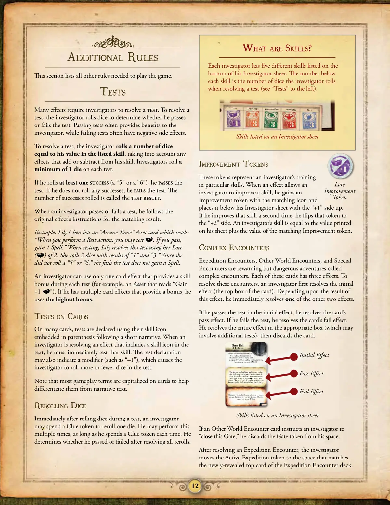
📝 第 12 页 AI 机翻对照（点击展开）
附加规则
本节列出了玩游戏所需的所有其他规则。
测试
许多效果要求调查员进行一次测试。要进行测试，调查员需要掷骰子以确定他是否通过或失败测试。通过测试通常会为调查员带来好处，而失败测试则往往有负面副作用。
要进行测试，调查员掷出数量等于其列表技能值的骰子，同时考虑任何增加或减少其技能值的效果。调查员每次测试至少掷1个骰子。
如果他掷出至少一个成功（"5"或"6"），他通过测试。如果他没有任何成功，他则失败测试。掷出的成功数量称为测试结果。
当调查员通过或失败测试时，他按照原始效果中对应结果的说明执行。
示例：莉莉·陈（Lily Chen）有一张名为"神秘法典"（Arcane Tome）的资产卡，上面写着："当你执行休息行动时，你可以测试[。如果你通过，获得1个法术。"休息时，莉莉使用她的2点学识（[）进行此测试。她掷出2个骰子，结果为"1"和"3"。由于她没有掷出"5"或"6"，她失败测试，没有获得法术。
调查员在每次测试中只能使用一张提供技能加成的卡牌效果（例如，一张写着"获得+1 ["的资产卡）。如果他有多张提供加成的卡牌效果，他使用最高的加成。
卡牌上的测试
在许多卡牌上，测试通过在简短叙述后使用括号内的技能图标来声明。当调查员正在解决一个文本中包含技能图标的效果时，他必须立即测试该技能。测试声明也可能指示一个修正值（如"-1"），这会导致调查员在测试中掷出更多或更少的骰子。
请注意，卡牌上的大多数游戏术语都使用大写字母，以帮助将其与叙述文本区分开。
重新掷骰
在测试过程中掷骰后，调查员可以立即花费1个线索指示物来重新掷一个骰子。只要每次他都花费1个线索指示物，他可以多次执行此操作。他在解决所有重新掷骰后确定是否通过或失败。
提升指示物
这些指示物代表调查员在特定技能上的训练。当效果允许调查员提升一项技能时，他获得一个带有相应图标的提升指示物，并将其放在他的调查员表格下方，"+1"面朝上。如果他第二次提升该技能，他将该指示物翻到"+2"面。调查员的技能值等于其表格上打印的值加上相应提升指示物的值。
复杂遭遇
探险遭遇、异界遭遇和特殊遭遇是回报丰厚但危险的冒险，被称为
复杂的遭遇。每张卡牌都有三种效果。要解决这些遭遇，调查者首先解决初始效果（卡牌顶部的框）。根据此效果的结果，他立即解决其他两个效果中的一个。如果他通过了初始效果中的测试，他解决卡牌的通过效果。如果他测试失败，他解决卡牌的失败效果。他解决相应框中的整个效果（这可能涉及额外的测试），然后弃掉这张卡牌。
他发现了你，并释放出一股撕裂你心智的奥术能量。除非你花费1个线索，否则失去3点理智。
你了解到他一直在阅读的内容，意识到他在世界之间打开了一道传送门；关闭这道传送门。之后，你检查他正在阅读的书([)。如果你通过，获得1个线索或1个法术。如果你失败，你从未遇到过如此恐怖的事情；失去2点理智。
你惊讶地看到一张熟悉的面孔正在阅读黑暗巫术的书籍。你试图瞥一眼他在阅读的内容而不引起他的注意(|–1)。
塞拉诺大厅
初始效果
通过效果
失败效果
调查者角色卡上列出的技能
如果异世界遭遇卡指示调查者"关闭这道传送门"，他从自己的区域弃掉传送门指示物。
解决探险遭遇后，调查者将活跃探险指示物移动到与探险遭遇牌库新揭示的顶牌相匹配的区域。
学识
提升
指示物
什么是技能？
每位调查者在调查者角色卡底部列有五种不同的技能。每个技能下方的数字是调查者在解决测试时掷骰子的数量（参见左侧的"测试"）。
调查者角色卡上列出的技能
学识
观察力
影响力
力量
意志
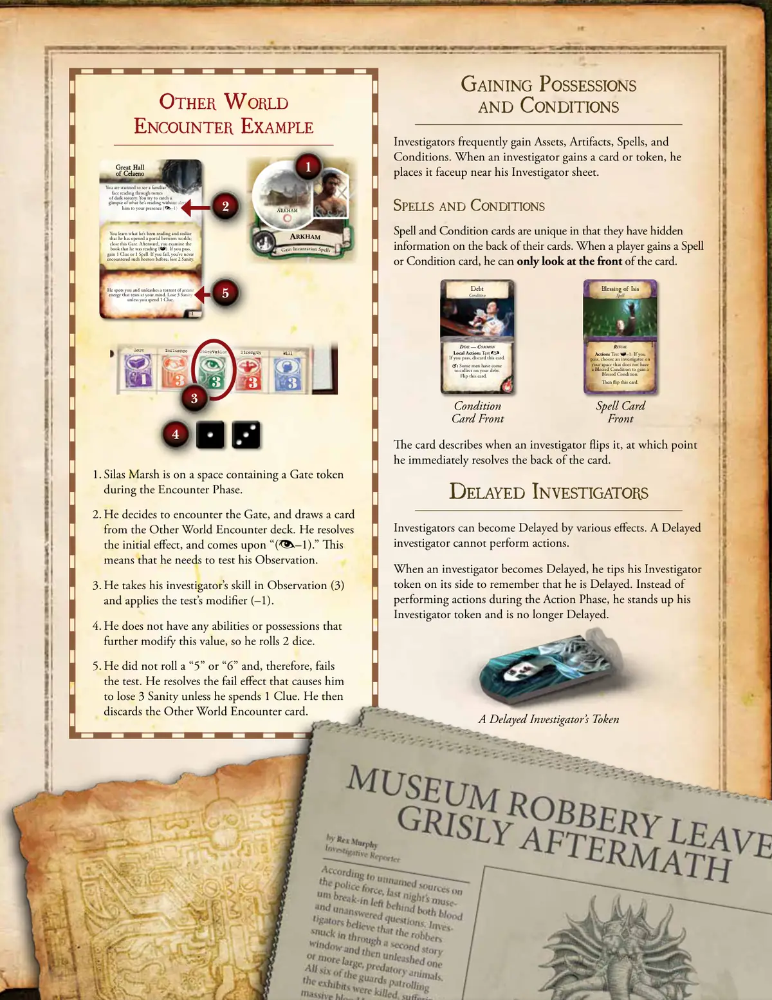
📝 第 13 页 AI 机翻对照（点击展开）
获取物品
和状态
调查员经常会获得资产、神器、法术和状态。当调查员获得一张卡牌或一个指示物时，他将它正面朝上放置在其调查员卡附近。
法术和状态
法术和状态卡牌的独特之处在于它们的卡牌背面有隐藏信息。当玩家获得法术或状态卡牌时，他只能查看卡牌的正面。
状态
交易 — 普通
本地行动：测试 ]。
如果你通过，弃掉这张卡牌。
@: 有些人来向你讨债。
翻转这张卡牌。
债务
法术
仪式
行动：测试 [–1。如果你通过，选择你所在空间上没有受祝福状态的调查员，使其获得受祝福状态。
然后翻转这张卡牌。
伊西斯的祝福
状态卡牌正面
法术卡牌正面
卡牌描述了调查员何时翻转它，此时他立即解决卡牌背面。
延迟的调查员
调查员可以通过各种效果变为延迟状态。被延迟的调查员无法执行行动。
当调查员变为延迟状态时，他将调查员指示物侧放以记住他处于延迟状态。在行动阶段期间，他不执行行动，而是将调查员指示物立起来，不再处于延迟状态。
一个被延迟的调查员的指示物
异世界
遭遇示例
1. 西拉斯·马什在遭遇阶段位于一个包含传送门指示物的格子上。
2. 他决定遭遇传送门，并从异世界遭遇牌库中抽取一张卡牌。他解决初始效果，遇到"(|–1)"。这意味着他需要测试他的观察力。
- 他使用其调查员的观察力技能(3)并应用测试的修正值(–1)。
4. 他没有任何能力或物品可以进一步修改这个数值，所以他掷2个骰子。
- 他没有掷出"5"或"6"，因此测试失败。他解决失败效果，导致他失去3点理智，除非他花费1个线索。然后他弃掉异世界遭遇卡牌。
知识
观察力
影响力
力量
意志
他发现了你，并释放出一股撕裂你思想的神秘能量洪流。失去3点理智，除非你花费1个线索。
你了解到他正在阅读的内容，意识到他在两个世界之间打开了一扇传送门；关闭这个传送门。之后，你检查他正在阅读的书([)。如果你通过，获得1个线索或1个法术。如果你失败，你从未遇到过如此恐怖的景象；失去2点理智。
你惊讶地看到一张熟悉的面孔正在阅读黑暗魔法的书籍。你试图在不惊动他的情况下瞥一眼他在读什么(|–1)。
塞拉诺的
宏伟大厅
获得
法术
阿卡姆
ARKHAM
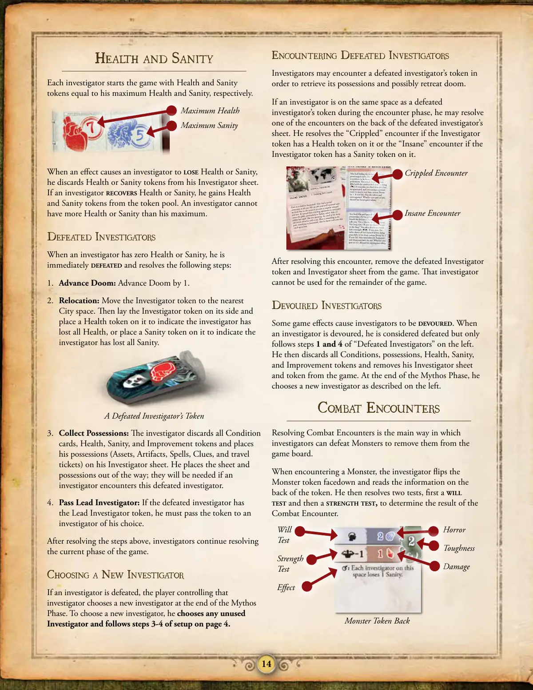
📝 第 14 页 AI 机翻对照（点击展开）
健康与理智
每位调查者在游戏开始时获得健康和理智指示物，数量分别等于其最大健康值和最大理智值。
最大健康值
最大理智值
当效果导致调查者失去健康或理智时，他需要从其调查者表上丢弃健康或理智指示物。如果调查者恢复健康或理智，他从指示物池中获得健康和理智指示物。调查者的健康或理智值不能超过其最大值。
被击败的调查者
当调查者的健康或理智值为零时，他立即被击败，并执行以下步骤：
- 推进厄运：厄运推进1点。
2. 重新安置：将调查者指示物移动到最近的都市区域。然后将调查者指示物侧放，并在其上放置一个健康指示物以表示该调查者已失去所有健康，或放置一个理智指示物以表示该调查者已失去所有理智。
被击败调查者的指示物
3. 收集物品：该调查者丢弃所有状态卡牌、健康、理智和改良指示物，并将他的物品（资产、神器、法术、线索和旅行票）放置在其调查者表上。他将该表和物品放置在一边；如果其他调查者遇到这位被击败的调查者，这些物品将会被需要。
4. 传递首席调查者：如果被击败的调查者拥有首席调查者指示物，他必须将该指示物传递给他选择的一位调查者。
完成上述步骤后，调查者们继续继续进行游戏的当前阶段。
选择新调查者
如果一位调查者被击败，控制该调查的玩家在神话阶段结束时选择一位新调查者。要选择新调查者，他选择任何未使用的调查者，并遵循第4页设置中的步骤3-4。
遭遇被击败的调查者
调查者可能会遭遇被击败调查者的指示物，以获取其物品并可能撤退厄运。
如果在遭遇阶段，一位调查者与被击败调查者的指示物在同一区域，他可以解决被击败调查者表背面的一个遭遇。如果调查者指示物上有健康指示物，他解决"残疾"遭遇；如果调查者指示物上有理智指示物，他解决"疯狂"遭遇。
你找到了塞拉斯，获得了他所有的物品。他的脸色变得苍白，呼吸变成了响亮的喘息声。他告诉你："我是马什家族。这是我的血脉。快了，我就要加入我的家人，去往深海。"你请一位医生整夜看护他（]）。如果你通过，这位水手在睡梦中平静离世前分享了他所知道的一切；厄运后退1点。如果你失败，塞拉斯放弃了人性，消失在海洋中。无论你
通过或不通过，弃置他的调查员指示物。
塞拉斯已将他的财物藏匿在
预先安排的藏匿处，但他本人
却无处可寻。获得他所有的
财物。你搜索当地医院，
里面满是身份不明的死者或垂死者
(|)。如果你通过，你会发现塞拉斯还活着但已丧失行动能力，你安排了一名私人护士看护他；末日指示物后退1步。如果你失败，塞拉斯孤独地死去且无人认领。无论你通过与否，弃置他的调查员指示物。
即使在因斯茅斯镇，年幼的塞拉斯与海洋也有着特殊的联系。他在陆地上是一个能干且理性的人，但在海洋上，他拥有独特的力量和智慧。这为他赢得了全球每个港口的卓越声誉，尤其是在悉尼，塞拉斯昨晚在那里上岸。但今天早上，咸涩的空气中既带来恐惧也带来喜悦。他的过去，他在因斯茅斯镇的经历，他知道总有一天会追上他。
1 渔网资产
澳大利亚，悉尼
塞拉斯·马什
残废遭遇
疯狂遭遇
解决此遭遇后，将被打败的调查员指示物和调查员卡从游戏中移除。该调查员在本游戏剩余时间内不能使用。
被吞噬的调查员
一些游戏效果会导致调查员被吞噬。当调查员被吞噬时，他被视为被打败，但只遵循左侧"被打败的调查员"中的第1步和第4步。然后他弃置所有状态牌、财物、生命值、理智值和改良指示物，并将他的调查员卡和指示物从游戏中移除。在神话阶段结束时，他按照左侧描述选择一名新的调查员。
战斗遭遇
解决战斗遭遇是调查员击败怪物并将其从游戏版图上移除的主要方式。
当遭遇怪物时，调查员将怪物指示物翻面并阅读指示物背面的信息。然后他进行两项测试，先进行意志测试，再进行力量测试，以确定战斗遭遇的结果。
恐惧
坚韧
伤害
意志
测试
力量
测试
效果
怪物指示物背面
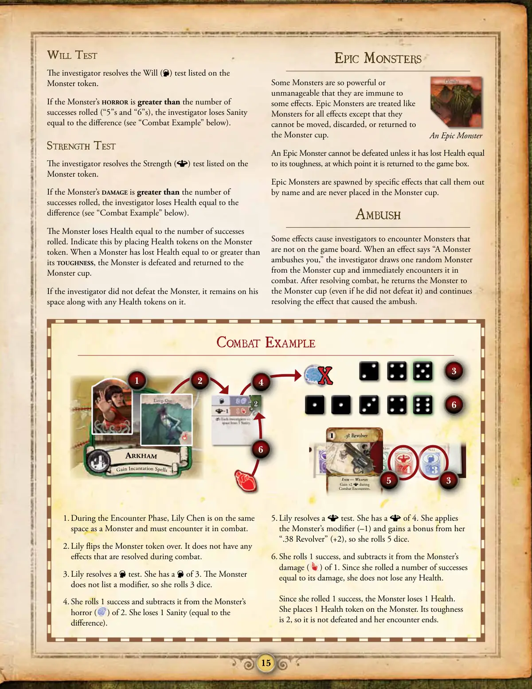
📝 第 15 页 AI 机翻对照（点击展开）
意志测试
调查者解决怪物指示物上列出的意志（{）测试。
如果怪物的恐怖值大于掷出的成功数（"5"和"6"），调查者将失去等于差值的理智（参见下方的"战斗示例"）。
力量测试
调查者解决怪物指示物上列出的力量（}）测试。
如果怪物的伤害值大于掷出的成功数，调查者将失去等于差值的生命值（参见下方的"战斗示例"）。
怪物将失去等于掷出成功数的生命值。通过在怪物指示物上放置生命值指示物来表示这一点。当怪物失去的生命值等于或大于其韧性时，怪物被击败并放回怪物杯中。
如果调查者没有击败怪物，它和其上的任何生命值指示物都留在其所在格子上。
史诗怪物
有些怪物过于强大或难以控制，以至于它们对某些效果免疫。史诗怪物被视为怪物，但所有效果除外，即它们不能被移动、弃置或放回怪物杯。
除非史诗怪物失去的生命值等于其韧性，否则它不会被击败，此时它被放回游戏盒中。史诗怪物由特定效果生成，这些效果会按名称召唤它们，并且永远不会被放入怪物杯中。
埋伏
某些效果会导致调查者遭遇不在游戏版图上的怪物。当效果说"一只怪物埋伏你"时，调查者从怪物杯中随机抽取一只怪物并立即与之进行战斗。在解决战斗后，他将怪物放回怪物杯中（即使他没有击败它），并继续解决导致埋伏的效果。
一只史诗怪物
战斗示例
1. 在遭遇阶段，莉莉·陈（Lily Chen）与一只怪物在同一格子上，必须与之进行战斗。
- 莉莉翻转怪物指示物。它没有任何在战斗中解决的效果。
- 莉莉解决一个{测试。她的{值为3。怪物没有列出修正值，所以她掷3个骰子。
- 她掷出1个成功，并从怪物的恐怖值（
）2中减去这个数。她失去1点理智（等于差值）。
- 莉莉解决一个}测试。她的}值为4。她应用怪物的修正值（-1）并从她的".38左轮手枪"（+2）获得加成，所以她掷5个骰子。
- 她掷出1个成功，并从怪物的伤害值（
）1中减去这个数。由于她掷出的成功数等于其伤害值，她没有失去任何生命值。
由于她掷出了1个成功，怪物失去1点生命值。她在怪物上放置1个生命值指示物。它的韧性是2，所以它没有被击败，她的遭遇结束。
知识
观察
影响力
力量
意志
获得咒语
阿卡姆
物品 — 武器
在战斗遭遇中获得 +2 }。
.38 左轮手枪
X
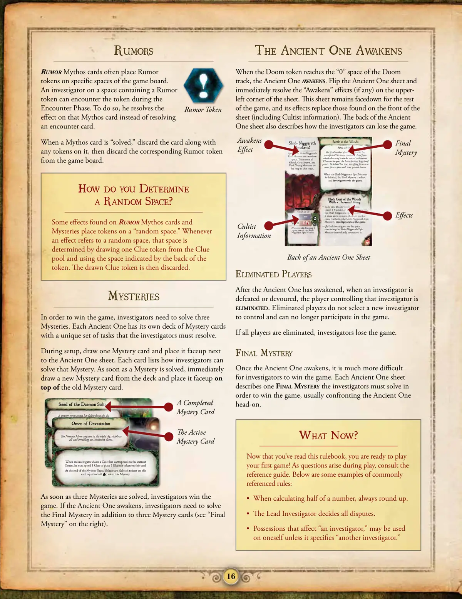
📝 第 16 页 AI 机翻对照（点击展开）
谣言
神话卡牌通常会在游戏版图的特定空间上放置谣言指示物。
位于含有谣言指示物空间上的调查员可以在遭遇阶段遭遇该指示物。为此，他解决那张神话卡牌上的效果，而不是解决遭遇卡牌。
当一张神话卡牌被"解决"时，将该卡牌及其上的任何指示物一同弃置，然后从游戏版图上弃置对应的谣言指示物。
谜题
为了赢得游戏，调查员需要解决三个谜题。每个远古神祇都有自己的一套谜题卡牌，包含调查员必须解决的一系列独特任务。
在设置阶段，抽取一张谜题卡牌并将其面朝上放置在远古神祇卡牌旁边。每张卡牌都列出了调查员如何解决该谜题。一旦一个谜题被解决，立即从牌库中抽取一张新的谜题卡牌，并将其面朝上放置在旧谜题卡牌的顶部。
当这张卡牌进入游戏时，将谜题指示物放置在通古斯卡(Tunguska)。
作为一次遭遇，位于通古斯卡(Tunguska)的调查员可以尝试在死寂森林(|)中寻找撞击的迹象。如果他通过，他会发现那块奇怪的绿色陨石；他可以花费2个线索来在这张卡牌上放置1个远古神祇指示物。
在神话阶段结束时，如果这张卡牌上的远古神祇指示物数量等于一半~，解决这个谜题。
一颗奇怪的绿色彗星从天而降。
即使在撞击之后，陨石仍在缓慢地向地球深处钻入。
恶魔苏丹的种子
当调查员关闭一张与当前预兆相对应的传送门时，他可以花费1个线索来在这张卡牌上放置1个远古神祇指示物。
在神话阶段结束时，如果这张卡牌上的远古神祇指示物数量等于一半~，解决这个谜题。
复仇之月出现在夜空中，对所有人可见，预示着即将到来的末日。
毁灭的预兆
当前
谜题卡牌
已完成的
谜题卡牌
一旦三个谜题被解决，调查员赢得游戏。如果远古神祇苏醒，调查员除了需要解决三个谜题卡牌外，还需要解决最终谜题（参见右侧的"最终谜题"）。
谣言指示物
远古神祇苏醒
当厄运指示物到达厄运轨道的"0"空间时，远古神祇苏醒。翻转远古神祇卡牌，并立即解决卡牌左上角的"苏醒"效果（如果有）。这张卡牌在游戏的其余时间里保持面朝下，其效果取代卡牌正面找到的效果（包括邪教徒信息）。远古神祇卡牌的背面还描述了调查员如何输掉游戏。
—
}–2
—
邪教徒
@：将这个怪物向舒布-尼古拉斯(Shub-Niggurath)史诗怪物移动1个空间。
林中黑山羊
拥有千名后代
• 每当厄运将要前进时，在含有
修格纳（Shub-Niggurath）史诗级怪物。然后，
如果该空间上有6个或更多怪物（包括修格纳史诗级怪物），调查员输掉游戏。
• @：该空间上的每个调查员立即遭遇它。
最终之谜
所有畸形的野生母亲已经显现！她是一团巨大的云雾，从中伸出数十条触手并不断伸缩。无论她走到哪里，都会留下巨大的蹄印。目睹她真实、恐怖的形态，就是直面原始的恐怖。
当修格纳史诗级怪物被击败时，最终之谜被解决，调查员赢得游戏。
森林之战
修格纳
苏醒！
在随机空间上生成修格纳史诗级怪物。然后将地图上所有的食尸鬼、山羊后代和黑暗年轻怪物移动到该空间。
最终
之谜
效果
邪教徒
信息
古神卡牌背面
苏醒
效果
被淘汰玩家
古神苏醒后，当一名调查员被击败或吞噬时，控制该调查员的玩家被淘汰。被淘汰的玩家不能选择新的调查员来控制，并且不能再参与游戏。
如果所有玩家都被淘汰，调查员输掉游戏。
最终之谜
一旦古神苏醒，调查员赢得游戏就变得更加困难。每张古神卡牌描述了一个调查员必须解决的最终之谜，通常需要直面古神。
如何确定随机空间？
在谣言神话卡牌和谜题上的一些效果会将指示物放置在"随机空间"上。每当一个效果提到随机空间时，通过从线索池中抽取一个线索指示物，并使用该指示物背面指示的空间来确定该空间。然后抽取的线索指示物被弃置。
接下来呢？
既然你已经阅读了这本规则书，你就可以开始你的第一场游戏了！游戏过程中出现问题时，请查阅参考指南。以下是一些常用规则的示例：
• 计算数字的一半时，总是向上取整。
• 首席调查员决定所有争议。
• 影响"一名调查员"的物品，可以用于自己，除非它指定"另一名调查员"。